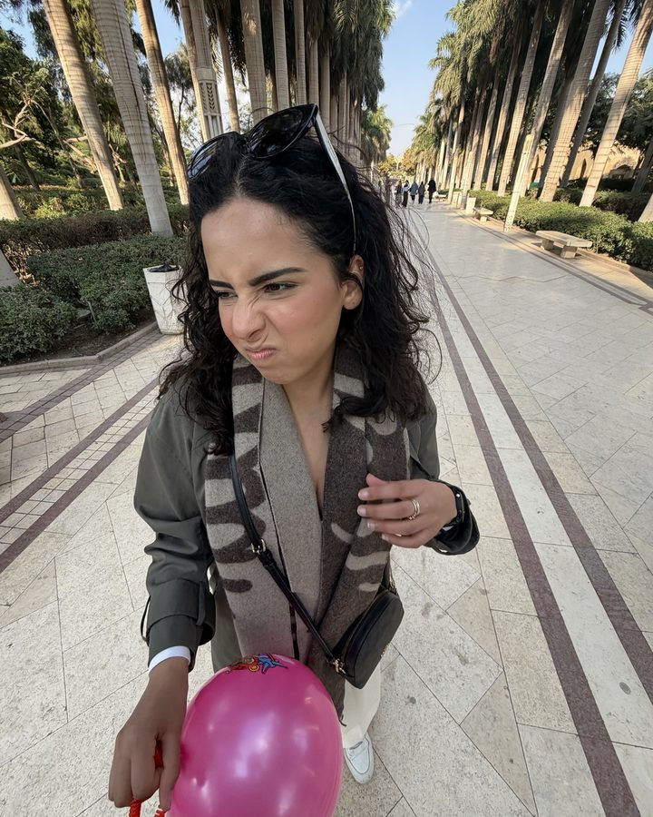
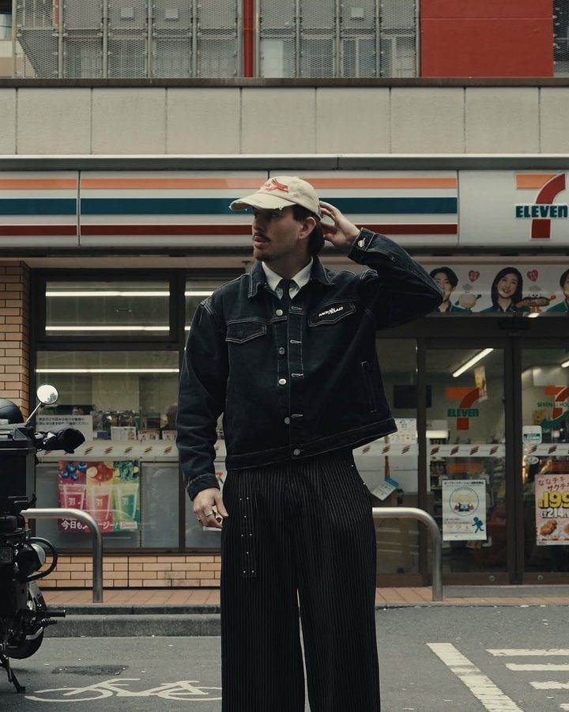
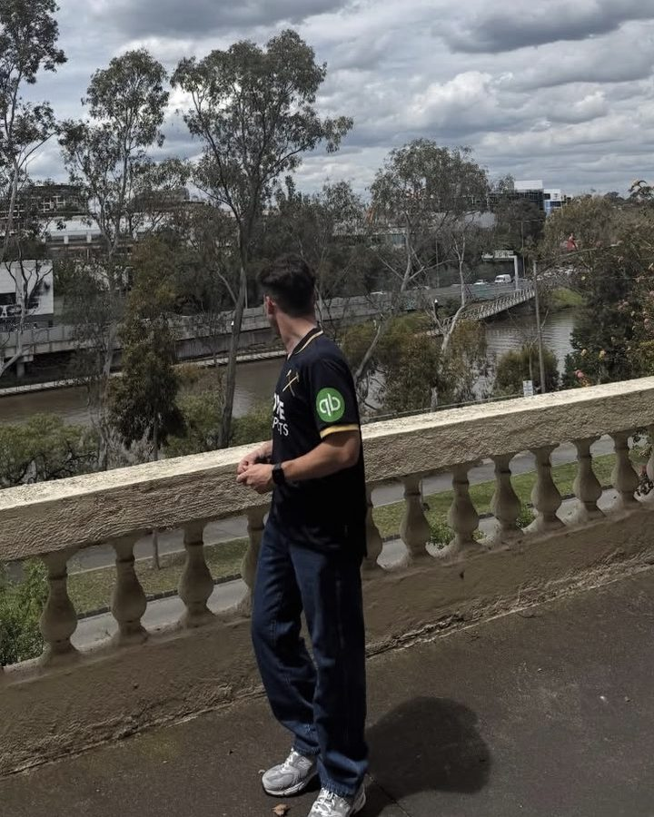
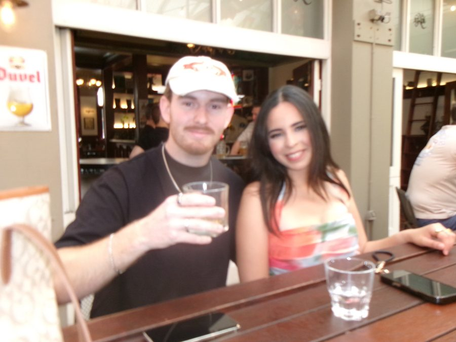
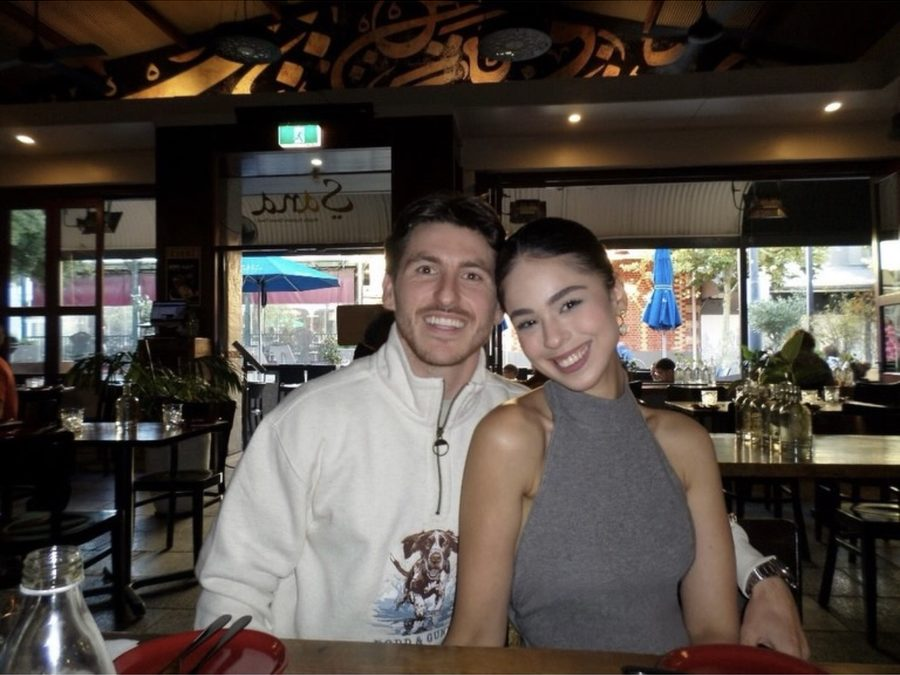
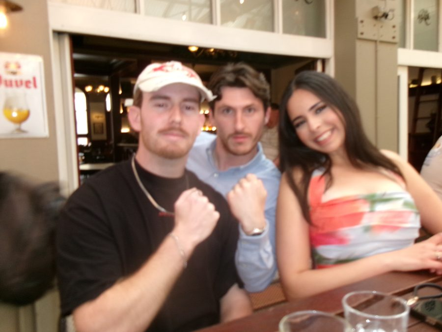
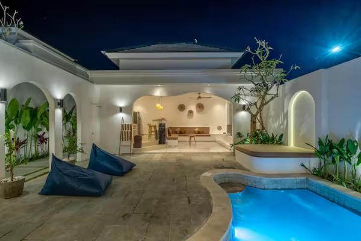
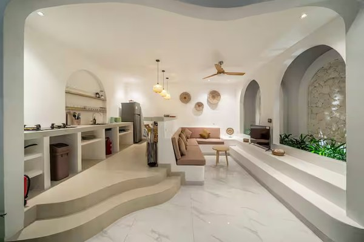

Meet the crew
Four people, two couples, one itinerary. Roles are official.

Menna
Leader of the pack
Three people are going to Bali because she said so.

Stobbie
Camera guy
Likes cameras. That’s it. That’s the bio.
Mariam
Second-prettiest sister
A close second. So close. Still second.

Tate
Chief coffee officer
Likes coffee. Goes to bed thinking about his first sip of the day. Do not talk to him before it.
Menna, again
Yes, her again
She made the website. She gets two.
The duos

Menna and Stobbie
Relationship status: undetermined
Ask again on Wednesday.

Mariam and Tate
The halal honeymooners
Fiancés, Islamically married, and the only two people here with a confirmed relationship status.
Menna and Mariam
The better couple
Sorry, boys. This is the real love story of the trip.

Tate and Stobbie
Arranged friendship
Menna set it up. It is going well, thanks for asking.
Before you fly
Get an ING or Bankwest card so you don't get international fees on any of your purchases or ATM withdrawals. Or give me your money 😈
Visa and entry
Three things each of us does online before the flight. Use only the official sites linked here; copycat sites charge extra. Rules are from Smartraveller and the official sites on 6 October 2026, so re-check the week before.
By Wed 11 Nov
Visa on arrival, bought online (e-VOA)
IDR 500,000, about A$40, plus a small online fee. It covers a 30-day stay. Apply at least 48 hours before we fly. You can also buy it at the airport on arrival for the same price, but that means a queue at 12:20 am and some counters are cash only.
ALL DONE FOR ALL FOUR ✔️
Apply on the official e-Visa siteWed 11 to Fri 13 Nov
All Indonesia arrival card
Free. This is the entry pass: one online form that covers immigration, customs and health. It only opens within 72 hours of the flight. Each person fills in their own and gets a QR code by email to show at immigration.
SET REMINDER TO DO 3 DAYS BEFORE TRIP ✈️
Fill in the arrival cardAny time before we land
Bali tourist levy
IDR 150,000, about A$12, once per person. Pay by card on the Love Bali site and keep the QR voucher it emails you. It can also be paid at counters in the airport.
ALL DONE FOR 3 TBC WITH STOBBIE 🙆🏼♂️
Pay on Love Bali
The plan, day by day
Saturday to Monday are set. Tuesday is open, so tell Menna what you want to do.
- Fri13Nov
Fly out
- 8:40 pm
- JQ106 leaves Perth Terminal 1.
- When we land
- 12:20 am Saturday. Through immigration, then walk to the Grab Lounge and order one Grab car to the villas. Have a card in the app, since we won't have cash yet.
Look for this green Grab Lounge once you walk out of international arrivals. Follow the overhead "Online Taxi" or "Grab Lounge" signs. Open in Maps - Sat14Nov
ULU Cliffhouse day
- Morning
- Sleep in, then breakfast at Healthy Tribes.
- 1 pm to 7 pm
- VIP daybed at ULU Cliffhouse (booked). We hand the daybed back at 7.
- Night
- Stay on at Cliffhouse for dinner, or head to Gooseberry.
- Sun15Nov
SPA DAY/ DATE NIGHT
- MORNING ☀️
- We go for a morning stroll, grab a coffee/matcha and have breakfast 🍳☕️
- 12:00PM
- SPRING Spa booking for the following treatments: Perfect for pairs messages 60minssports manicure (for the boys)sports pedicure (for the boys)Russian nails (for the girls)men’s hair cuts (self explanatory really)wash with styling for women 🧖🏼♀️
- DINNER
- I want to say up to the boys, but if you're stuck please look at the dinner list I have made on the site 🫡
- Mon16Nov
- Morning
- Massage. Pick a spa from Nails and massages below and book ahead for four.
- Day
- Shopping and markets along Labuansait and the Bingin strip. Hatch's makers market is weekend mornings only, so catch it Sunday if we want it.
- Sunset
- Single Fin. Book a table through their website or WhatsApp.
- Dinner
- MASONRY or YUKI. Book whichever we pick.
- Tue17Nov
Salsa Night 💃🏽
- The plan
- Open to suggestions. Suggestions may be ignored. Ideas: a beach morning at Nyang Nyang, a surf lesson, or Uluwatu Temple at sunset with the Kecak fire dance.
- Wed18Nov
Fly home
- Around 12:00 pm
- Booked a grab to pickup from villa at 12PM. Aiming to arrive at 12:55PM
- 3:55 pm
- JQ107 leaves Denpasar. We land at Perth Terminal 1 at 7:30 pm.
- The plan
- Home by 7:30 pm. Work tomorrow. Thoughts and prayers.
Where to stay
Done. Two one-bedroom villas with their own pools, side by side in the same complex, five minutes from Savaya. Booked and paid for, so stop sending me listings.
-

K2-C
A$634 for 5 nights
- Rooms
- 1 bed, 1 bath
- Rating
- 4.65 (20 reviews)
- Area
- K2 complex, 5 min from Savaya
- Pool
- Private pool
- Cancel
- Booked and paid
-

K2-E
A$626 for 5 nights
- Rooms
- 1 bed, 1 bath
- Rating
- 4.83 (47 reviews)
- Area
- K2 complex, 5 min from Savaya
- Pool
- Private pool
- Cancel
- Booked and paid
Beach club, beach and temple
Our saved Uluwatu spots. Ratings are from Google Maps on 17 October 2026. Tap a name or photo to open it in Maps.
Booked
ULU Cliffhouse
Booked: VIP daybed, Sat 14 Nov, 1 pm
Pool club, restaurants and ocean views on the cliffs. Open 8 am to 10 pm. Bring swimmers, sunscreen and the booking confirmation.
Beach clubs
Single Fin
Google Maps 4.6 (14,338)
Uluwatu's classic sunset bar, watching the surfers below. Sundays run late. Book a table through their website or WhatsApp.
Beach and temple
Uluwatu Temple
Google Maps 4.6 (53,321)
The temple sits on the cliff edge above the sea and opens at 7 am. Go for sunset and stay for the Kecak fire dance. Cover knees and shoulders (sarongs are lent at the gate), bring cash, and hold onto sunglasses around the monkeys.
Nyang Nyang Beach
Google Maps 4.5 (2,425)
A long, quiet stretch of white sand under the cliffs. The walk down is a lot of steps, so wear proper shoes and bring water. Little shade, so go morning or late afternoon.
Eat and drink
Dinner
Gooseberry
Google Maps 4.8 (9,566)
French dining by the pool, with white tablecloths and rattan chairs. One of the most-reviewed places in Uluwatu, so book.
Mana Uluwatu
Google Maps 4.5 (3,093)
Wooden deck looking straight out over the ocean. Come for sunset drinks and dinner.
MASONRY.
Google Maps 4.6 (1,468)
Buzzy, plant-filled dining room with Mediterranean plates. Busy at night, so book.
Hidden Gem
Google Maps 4.7 (329)
Smart little dining room and wine lounge. A good pick for a dressier dinner.
ULU Garden
Google Maps 4.8 (3,721)
Lounge-style garden restaurant inside ULU Tribe, with sofas and treetop views.
Cafes, brunch and matcha
SUKA
Google Maps 4.8 (11,509)
The most-reviewed cafe on the list. Big brunch menu and always busy, so go early.
Analog
Google Maps 4.7 (1,388)
Wood-panelled cafe with a wall of vinyl and surfboards. Coffee by day, drinks at night.
Healthy Tribes
Google Maps 4.8 (921)
Bowls, salads and smoothies in a bright cafe with rattan chairs. Easy lunch after a massage.
Naone Matcha
Google Maps 4.8 (217)
Japanese-style matcha bar with several grades of matcha, whisked in front of you. Reviews pick the strawberry, coconut and salted-foam matcha.
Matchamour
Google Maps 4.5 (141)
Colourful matcha drinks to sit in or take to the beach; the coconut cold foam is the favourite. Handy before Nyang Nyang.
Drinks and games
Hatch Uluwatu
Google Maps 4.8 (8,001)
Big jungly hangout with food, drinks, mini golf, pool and games, open late. Weekend mornings it hosts a makers market with jewellery, clothes and art.
Nails and massages
Nails
kuku. Nail Spa
Google Maps 4.6 (492)
Clean, modern nail spa on the Bingin strip for gel nails, pedicures and nail art. Book ahead for a group of four.
Massages
Laia Spa
Google Maps 4.9 (618)
Top-rated of the lot. Balinese massage and foot rituals on the main Uluwatu road.
Spa Central Uluwatu
Google Maps 4.9 (1,101)
The old Mora Spa, now Spa Central. Big modern building with a cookie and coffee shop downstairs for after.
The Grey Spa
Google Maps 4.8 (1,722)
Calm, minimal spa with a big following. Massages, scrubs and foot treatments. Opens 10 am.
Luna Massage
Google Maps 4.8 (642)
Light, linen-curtained rooms. Foot soak first, then Balinese or deep-tissue massage.
Bali Bliss Massage Co.
Google Maps 4.8 (323)
Bright, modern spa on Labuansait for massages and body treatments.
Cocohut Massage Spa
Google Maps 4.7 (343)
Coconut-themed spa on Labuansait. Surfers' recovery and deep-tissue massages, about IDR 280,000 for 60 minutes when we checked.
Getting around
Download Grab and Gojek before we fly. Both book cars and scooters and deliver food, and both show the price before you confirm.
Grab
Pay by linked card or cash
At the airport, follow the green Grab signs from baggage claim to the GrabCar Lounge at international arrivals, book in the app and meet the driver there.
Gojek
Pay by linked card or cash
Also has a signed lounge at the airport. Sign-up needs your mobile number with country code and a text code, so set both apps up in Australia before we fly.
Airport to the villa at 12:20 am
Private SUV about US$44
Late at night app fares rise and waits get longer, so a pre-booked driver or one arranged by the villa host is the safer choice for our arrival. Grab or Gojek is the backup.